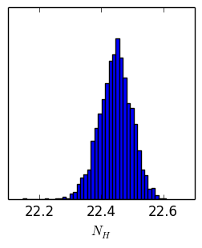
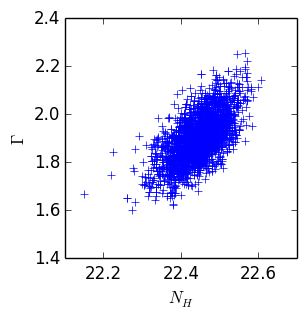
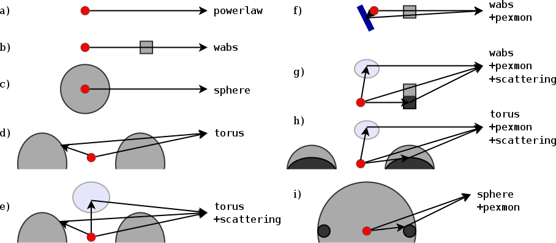
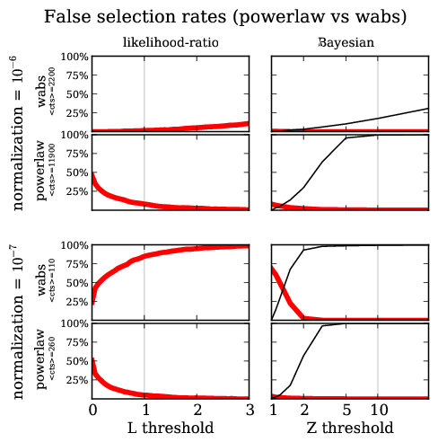

Bayesian model selection for X-ray spectra
http://arxiv.org/abs/1402.0004
Overview
- X-ray data collection
- Likelihood (C-stat)
- Fitting with Xspec
- Analysis with BXA (PyXspec or Sherpa)
- What does it all mean?
- Summary
- Discovering models, false positive rates
X-ray data collection

Likelihood for Data collection process
Poisson likelihood($\theta$ $\rightarrow$ model $\rightarrow$ telescope; data)
$$\cal{L}(\theta|M)$$
Tells how likely it is to generate the observed data, assuming parameters $\theta$ and
model $M$ are the real ones.
Many outcomes possible
Fitting in PyXspec
#!/usr/bin/env python
import bxa.xspec as bxa
from xspec import *
Fit.statMethod = 'cstat'
Plot.xAxis = 'keV'
s = Spectrum('example-file.fak')
s.notice("0.2-8.0")
m = Model("pow")
# set model parameters ranges
# val, delta, min, bottom, top, max
m.powerlaw.norm.values = ",,1e-10,1e-10,1e1,1e1" # 10^-10 .. 10
m.powerlaw.PhoIndex.values = ",,1,1,3,3" # 1 .. 3
fit()
- Fitting find where $\theta$ makes $\cal{L}$ maximal
- Contour
- Fisher information
- MCMC
Analysis in PyXspec or Sherpa
#!/usr/bin/env python
"""
Example of doing BXA in X-spec
"""
import bxa.xspec as bxa
from xspec import *
Fit.statMethod = 'cstat'
Plot.xAxis = 'keV'
s = Spectrum('example-file.fak')
s.ignore("**"); s.notice("0.2-8.0")
m = Model("pow")
# set model parameters ranges
# val, delta, min, bottom, top, max
m.powerlaw.norm.values = ",,1e-10,1e-10,1e1,1e1" # 10^-10 .. 10
m.powerlaw.PhoIndex.values = ",,1,1,3,3" # 1 .. 3
transformations = [
bxa.create_uniform_prior_for( m, m.powerlaw.PhoIndex),
bxa.create_jeffreys_prior_for(m, m.powerlaw.norm),
]
# send it off!
bxa.standard_analysis(transformations,
outputfiles_basename = 'simplest-',
verbose=True, # show a bit of progress
resume=True, # MultiNest supports resuming a crashed/aborted run
)
Explanation needed: Chains
 
Model comparison
produces Z value: "evidence for the current model"
$$B = \frac{Z_1}{Z_2}$$
$$O = \frac{P_1}{P_2} \frac{Z_1}{%_2} = 100$$
model 1 is 100x more probably than model 2, given this data
$O~1$: can not distinguish!
Pragmatic view
- Why fitting is poor
- multiple peaks
- uncertainty estimates in multiple dimensions are dodgy
- MCMC
- nested sampling
- Global algorithm
- samples from parameter space
- explores multiple peaks
- computes integral, quite fast
Application / Priors
CDFS: ~300 AGN detected
Model definition: Torus

represents physical scenario

Parameters
- Normalisation ~ L
- log-uniform
- $\Gamma$
- informed prior $1.95\pm0.15$
- column density $N_H$
- log-uniform
- z
- informed: pdf
Spectra: 179


Summary
Current best practice
- No binning (except for visualisation)
- model the background
- C-stat / Poisson likelihood
Proposed
- Compute parameters, uncertainties
- Compute Z
- Compare Models
$\rightarrow$ see paper
- A method for combining pieces of information
- z + local information + X-ray data
- Experiment design
False detection probability

Model discovery